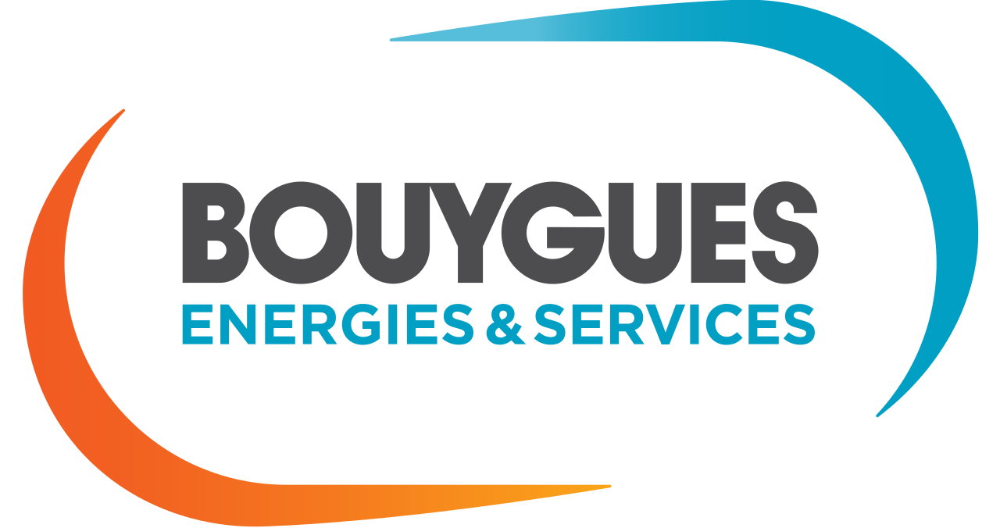

Expériences professionelles
Professeur Informatique et Multimédia
Ministère de l'agriculture
Septembre 2017 - Aout 2019 Lycée du Mené - Merdrignac Enseignement de la bureautique, des outils de graphisme et de l'usage d'internet Cours en demi-classe
Développeur en Uniface
Ardans
Juin 2016 - Mai 2017 Levallois-Perret Dans une équipe de développeur chez PSA Finance Mise en place des Ibans dans la gestion des comptes Correction de bugs
Support téléphonique Multimédia
Apple
Mars 2014 - Avril 2016 Cork - Irlande Dans une équipe d'une quinzaine avec un manager Niveau 1 puis niveau 2 : aide fournie aux niveaux 1 ou prise des appels Support sur les produits iPhone ou Macs
Développeur Java GWT
Bouygues Energies et Services
Mars 2013 - Novembre 2013 Grand-Lancy - Suisse Stage de six mois puis CDD de 3 mois Mise en place d'une interface de gestion énergétique de bâtiments Affichage de données par année et éventuellement ramenées au m2 Communication avec la Base De Données Planon via des fichiers au format csv